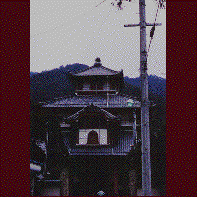
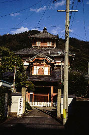
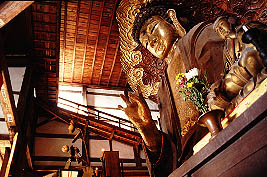
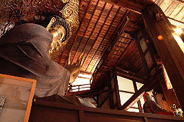
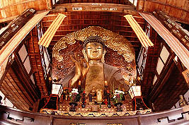
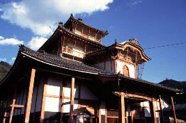
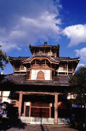

かご大仏/岐阜県岐阜市 
岐阜市を流れる長良川。河口の方ではなにやら河口堰が出来たらしく騒がしいようだが、この辺はそんなことは関係無く、のほほ〜んと鵜飼などをやったりしている。その長良川のほとり、金華山の麓にかご大仏はある。
かご大仏と聞いて、何やら竹で編んだちゃっちいモノを想像しがちだが、さにあらず。木材の骨格に竹で輪郭をつくり、粘土、一切経、漆を塗りさらに金箔で仕上げた力作なのだ。高さは13.63、結構でかい。印相はOKマーク、顔はちょっとブラック系はいってます。
この大仏さん、建物の中にいるのだが、ここで問題にしたいのはその大仏殿なのだ。まず外観なのだが、大仏さんが中にいるだけあってデカい。しかしそれだけではない。建物の形状がなんかヘンなのだ。何がヘンなのか考えてみた、何よりも3層というのが変っている。それに破風の切り方も変だ。普通1階の屋根から破風は切るものだがここのは2階から切ってある、しかも破風の奥行きが異常に長い。
結論としてお寺に見えないのだ。城のようにも見える。
日本の木造建築はその技法的な要因から、城と寺はデザインから屋根の形まできっちりと区分されている筈である。誰だって城と寺は一目で区別がつくだろう。しかしこの寺はその区分が曖昧で丁度寺と城の中間といった感じなのだ。
入場料を払いパンフレットを見る。正式名称は金鳳山正法寺、黄檗宗である。そこで何となくこの寺が変なのに納得がいった。黄檗宗とは中国の仏教を最もストレートに輸入している宗派で、本山の宇治の万福寺などはモロ中国の寺院だし、ここもその末寺だとすれば日本の寺院建築の「お約束」など関係ないのだろう。
というわけで大仏殿に入る。内部は二層吹き抜けでその中に大仏が鎮座している。大仏にあわせて建物を造ったのか、建物にあわせて大仏を造ったのか良く分からないが大仏が建物めいっぱいに納まっている。大仏が少し前屈みで窮屈そうなのがカワイイ。両壁には五百羅漢の群像。シブイ。
その羅漢の並ぶ壁面を見上げる。するとそこには一階から二階に登るスロープがある。両側にである。よく見ればそれは大仏の後ろから左右に階段が伸び両壁面のスロープになり、二階部分の破風の内側（大仏殿内部は吹き抜けだが、その部分だけ床が張ってあり、内側に向かったテラスのようになっている）で合流しているのだ。これは一体何だ、と思い入場券を売ってるおじさんに聞いてみた。昔は参拝者はこのスロープを伝って大仏さんの顔を真正面から拝んだらしい。ちなみに今は危険なので禁止だそうな。つまり、この大仏殿は大仏さんの目線の高さを体験する為の空間スペクタクル装置としてのハコなのだ。大仏さん、正面から拝んでみたいものだ。
そう言えば、三階の部分にも独立した部屋があるらしいのだが、そこに行く階段がなかったような気がしたぞ。う〜む、不思議だ。
情報提供はへりおすさんです
写真を追加しました（2000.4）
  
  
珍寺大道場 HOME